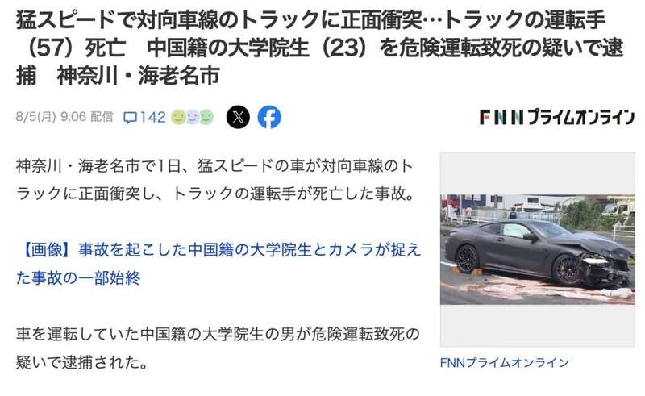

根据日本新闻报道，神奈川县一名中国留学生驾驶宝马M6与一辆卡车相撞，造成一名日本人死亡。据目击者称，肇事男子事后独自坐在路边，冷血看着无辜司机惨死，完全没有要救人的意思。

事故发生在1日下午2点40分左右，在贯穿神奈川县和海老名市的县道上。
一辆反向行驶的黑色汽车越过隔离带，撞上卡车，冒出滚滚浓烟。黑色汽车旋转着，消失在屏幕上。现场附近安装的安全摄像头捕捉到了事故发生前的场景。
原来是高速行驶的黑色宝马车，与中央分离带相撞的弹力冲向对面车道，与迎面而来的卡车相撞。
此次事故中驾驶卡车的北村太一（57岁）在被送往医院后死亡。黑车司机是一名23岁的中国男留学生，受轻伤被送往医院。事故发生时，该留学生明显是吓傻了，坐在路边，并低着头。并没有进行救援工作或拨打电话求助。这也被日本媒体诟病。
警察2日逮捕了驾驶宝马轿车的中国籍在读研究生苟某 (23 岁)。
对此，日本网友称：请公开他的名字，因为这是一起严重事故。不要让肇事者离开这个国家。在日本对他们进行严厉的惩罚。对于恶意事故，“恨其人，但不恨其罪”。犯罪可能是不可避免的。然而，人们却因驾驶不当而死亡。这是不可接受的。
也有网友称：一般情况下，一旦发生这样的事故，肇事者会立即被逮捕，警方必须立即逮捕此人，将他拘留，在他支付赔偿金或被判入狱之前，绝不允许他出境。最近，越来越多地看到外国人开着本地车到处走动。如果发生事故并且汽车没有保险，那就太糟糕了。
奇怪的是，交通事故不适用伤害或谋杀指控。这种情况在普通大众中很常见，以至于不清楚为什么需要驾驶执照，但汽车是一种移动武器，和拥有一把手枪没有什么区别。如果处理不当，很容易夺走人的生命。如果驾驶违规行为明确，有观点认为应该提出袭击或谋杀指控。考虑到交通受害者遭遇的残酷、令人遗憾和痛苦的现实，加强处罚和监管是非常有必要的。特别是对于老年人、外国人、美军人员、以及其他国家的公务车辆来说，规则和处罚需要比国内法规更多的关卡，这是一个迫切的需要。
也有网友表示：驾驶的车辆是宝马M5或M6，我不认为23岁的留学生能够买一辆最高时速超过280公里/小时的跑车，而且如果你用力踩油门即使你不是一个没有经验的司机，也会遭遇这样的灾难。尽管他是加害者，但他没有救出受害者，所以他负有巨大的责任。我希望他受到严厉的惩罚。